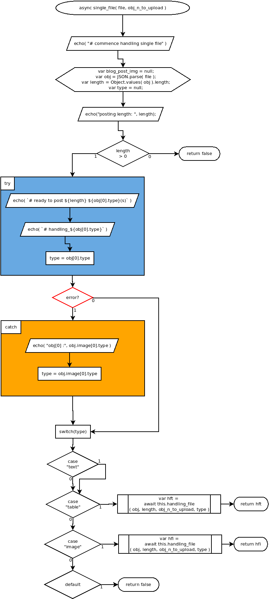

async single_file( file, obj_n_to_upload )
Flowchart

Code
async single_file( file, obj_n_to_upload ){
echo( "# commence handling single file" );
var blog_post_img = null;
var obj = JSON.parse( file );
var length = Object.values( obj ).length;
var type = null;
echo("posting length: ", length);
if( length > 0 ){
try{
echo( `# ready to post ${length} ${obj[0].type}(s)` );
echo( `# handling_${obj[0].type}` );
type = obj[0].type;
} catch{
echo( "obj[0] :", obj.image[0].type );
type = obj.image[0].type;
}
switch ( type ) {
case "text":
case "table":
await this.handling_file( obj, length, obj_n_to_upload, type );
break;
case "image":
await this.handling_file( obj, length, obj_n_to_upload, type );
break;
default:
return false;
}
}
}
Refers to:
async handling_file( obj, length, obj_n_to_upload, type )